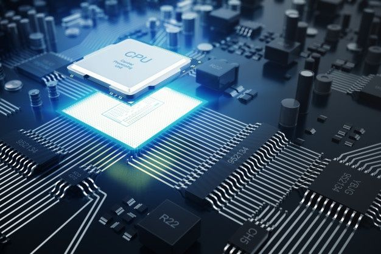
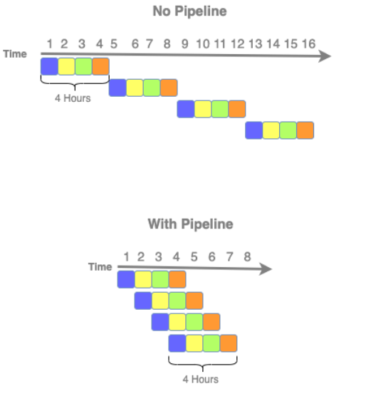

Inicialmente é importante ressaltar a diferença entre arquitetura e organização, no qual a arquitetura é a parte visível ao programador, como a quantidade ed bits usados
Agora a organização é a parte mais física ou de "baixo nível", sendo a implementação da arquitetura, ou seja, como será implementado, como por exemplo através da CPU, memória... e como eles vão interagir entre si para cumprir o propósito definido
Ademais, a arquitetura é muito importante para a compatibilidade do código, exemplo este no IBM System/370 que compartilha a mesma arquitetura básica e gera a mesma compatibilidade, porém vai mudando a organização
Estrutura e função:
- Estrutura - É a maneira como os componentes interagem entre si
- Função - São as funções que cada componente executa no sistema como um completo, por exemplo alguns processam dados, outros fazem o armazenamento de dados...
Atualmente os computadores permanecem a partir da arquitetura proposta por Von Neumann, reunindo os diversos componentes necessários para o funcionamento de um computador: Memória, Unidade Lógica e Aritmética, Unidade Central de Processamento e Unidade de Controle
Processadores

Tem a função de processar os dados através de instruções. Desta forma o processador é composto por:
- ULA - Unidade Lógica e Aritmética: É a responsável por executar calculos aritméticos e lógicos, sendo alguns exemplos delas: AND (só é verdade se as duas forem), OR (Se pelo menos alguma é verdade), XOR (É verdade a partir do momento que as variaveis assumem valores diferentes entre si), NOT(Negação, se não for verdade)
- UC - Unidade de Controle: É a responsável pelo controle das instruções dentro do processador, garantindo que será executado corretamente o que é pedido. Como por exemplo, quando é inserido um dado no barramento, sendo que a Unidade de Controle vai retirar esse dado e armazena-lo
- Obs: Barramento - responsável por transmitir dados entre elementos(como se fosse um fio)
- Registradores: Os registradores são como pequenas memórias presentes no processador, porém são extremamente rápidas, tendo dois tipos: Propósitos Gerais (São utilizados para armazenar dados) e Específicos(Armazenam informações necessárias para executar uma instrução e são comandadas pela unidade de controle)
- Exemplo de registrador específico são os:PC (Contador de programa) sendo responsável por armazenar a proxima posição de instrução que será executada, e RI(Registrador de Instrução) que é capaz de armazenar o código da instrução que está sendo executado
Instruções
As instruções são aquelas que coordenam o que é necessário ser feito, ou seja, o que será executado pelo computador, como por exemplo um programa, que é composto por diversas instruções que são executadas de forma ordenada
OPCODE - Código binário que identifica a instrução, executando em conjunto com outras funções como o Operando, sendo que é o responsável por muitas vezes em apontar a localização de um dado propriamente dito
Existem diversos tipos de instruções, sendo elas:
- Matemáticas e Lógicas
- Movimentação de Dados
- Entrada e saída
- Controle
Ademais, para serem executas é seguido um passo a passo:
- S1 - Busca a instrução na memória
- S2 - Decodifica a instrução pelo processador
- S3 - Busca o operando na memória
- S4 - Executa a instrução pelo processador
- S5 - Escrita do resultado
Paralelismo

O paralelismo é o processo no qual o processador faz uma divisão dos passos que serão necessários para poderem executar uma certa função. Desta maneira, os passos podem ser controlados por parte menores, classificando-se assimo clock do processador, que é definido pelo tempo que cada passo(estado) demorará para ser executado
Sob essa ótica, o paralelismo é uma ótimo escolha para poder previnir a necessidade de esperar a liberação dos dados pela memória
Desta forma, pode ser executado de duas formas, Instruções ou HardWare, no qual:
- Instruções: É quando são executadas diversas etapas no processador por diversas partes dele, podendo ser por exemplo o Pipeline, que executa em cada parte da CPU uma coisa e quando todos acabam o processo é concluido
- Hardware: Ocorre na presença de mais de um processador, tornando possível a divisão entre os componentes, como por exemplo os Multiprocessadores, que são processadores interligados que executam instruções de um mesmo programa ao mesmo tempo e compartilham da mesma memória(porém cada um tem a sua propria memória individual presente em si mesmo)
Por fim, os ultimos conceitos essenciais são: CIS e RISC, sendo que:
- CIS - É um tipo antigo de processadores, que tem uma grande quantidade de instruções já gravadas nele com intuido de acelerar sua velocidade através da falta de necessidade de buscar as operações
- RISC - É o contrário do CIS, tendo poucas instruções, apenas as mais essenciais e frequentes estão presentes neles
Obs: Processadores CISC são mais utilizados em computadores e RISC em dispositivos móveis pela sua eficiência energética e tamanho compacto.
|